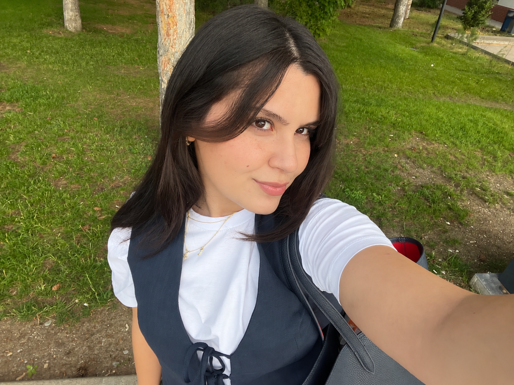

GIS & Spatial Analysis
Spatial data quality control, topology checks, network analysis and accessibility analysis.

ABOUT ME
Geomatics Engineering Student
Hi, I'm Yağmur. I study Geomatics Engineering at Hacettepe University and Geographic Information Systems through Anadolu University’s Open Education program. I'm interested in GIS, remote sensing and turning spatial data into something people can explore.
Beyond my studies, I enjoy discovering places through poetry, art, films and food. This website brings those interests together with my travels and the destinations on my wishlist.
Geomatics Engineering
Undergraduate studies · Expected graduation: 2027
2022 – Present
Geographic Information Systems
Open Education · Expected graduation: 2027
2025 – Present
High School
Merzifon, Amasya
2017 – 2021
TOOLS & METHODS
Tools and methods I have worked with through my coursework, internships and personal projects.
Spatial data quality control, topology checks, network analysis and accessibility analysis.
Supervised classification, orthophoto comparison and stereo image interpretation.
Programming and database coursework, alongside hands-on web development through this Web GIS project.
CAD drawing, technical documentation, spreadsheet work and presentation preparation.
PRACTICAL EXPERIENCE
Geomatics Engineering Intern
Geomatics Engineering Intern
I built this website for my Web GIS coursework to explore how maps can connect places with stories and personal interests.
The culture map brings together poets' birthplaces, artworks, Michelin-starred restaurants and locations connected to films and series. The travel map shows destinations I've visited and those on my wishlist.
Explore my maps ↗